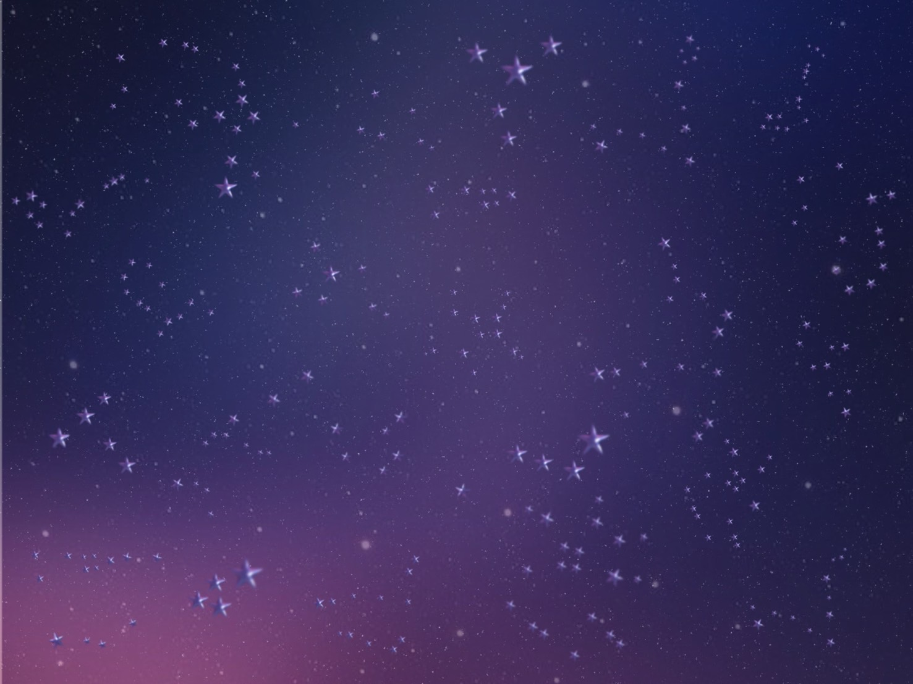

✦ Star Pointer
Natural Feature Tracking · Camera → XY → TouchDesigner
Camera Viewยังไม่ได้เปิดกล้อง
ตำแหน่ง X—
ตำแหน่ง Y—
Good Matches—
กำลังรอ OpenCV.js…
ภาพต้นฉบับที่ใช้จับคู่คุณลักษณะ (ORB)

TouchDesigner WebSocketยังไม่เชื่อมต่อ
ส่ง JSON เมื่อ Tracking สำเร็จ: {"type":"pointer","x":0.5,"y":0.5,"tracking":true}
- เปิดเว็บผ่าน HTTPS แล้วอนุญาตใช้กล้องหลัง
- ให้ TV แสดงภาพ Reference นี้ โดยไม่ยืดหรือครอปภาพ
- หันกล้องไปยัง TV ให้เห็นรายละเอียดดาวหลายบริเวณ แล้วกด “เริ่ม Tracking”
- เล็งจุดกึ่งกลางหน้าจอมือถือไปยังตำแหน่งต่าง ๆ บนภาพ พิกัด X/Y จะเปลี่ยนตาม
- ถ้าต้องการส่งเข้า TouchDesigner ให้เปิด WebSocket server แล้วเชื่อมต่อ URL ให้ถูกต้อง
ข้อจำกัด: ภาพที่เห็นต้องมีรายละเอียดตรงกับ Reference มากพอ และเป็นภาพนิ่ง การจับคู่ไม่สำเร็จจะแสดง Tracking Lost แทนการเดาพิกัด
Prototype สำหรับทดสอบแนวคิด · พิกัด X/Y อยู่ในช่วง 0–1 โดย Y=0 คือด้านบน